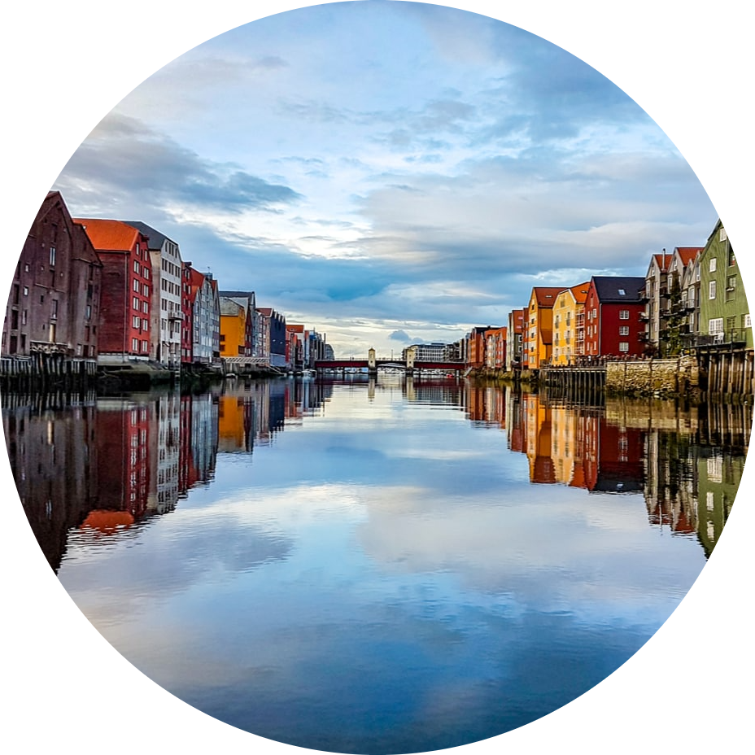

|  |
Trondheim
Laget av Marie Hansen, 1. februar, 2024
I denne store lille byen forenes historiens lange linjer med fremtidens mange muligheter. Historie, kultur, teknologi og grønt initiativ mikses sammen og utvikles på nye og spennende måter.
Byen vibrer av liv og byr på smaksopplevelser i verdensklasse, samtidig som småbysjarmen og nærheten til naturen er like intakt. Med sine 200.000 innbyggere er Trondheim Norges tredje største by.
For mer informasjon om Trondheim, sjekk ut Visit Trondheim , den offisielle nettsiden for turisme i Trondheim.
|